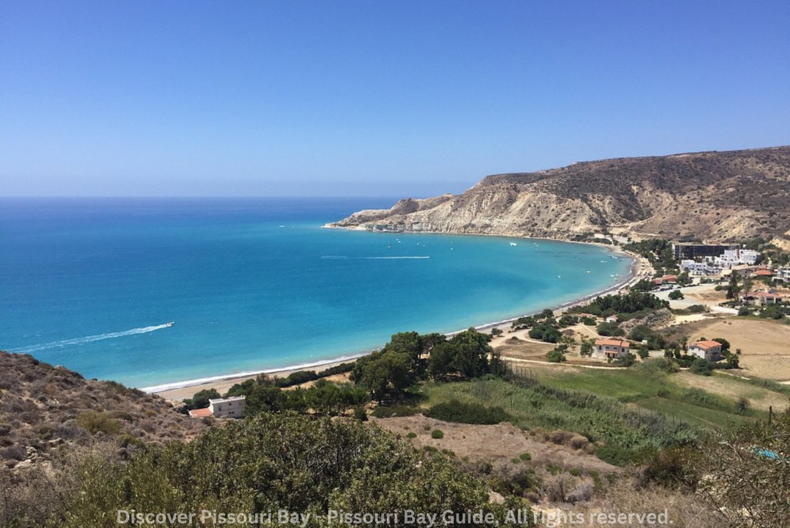
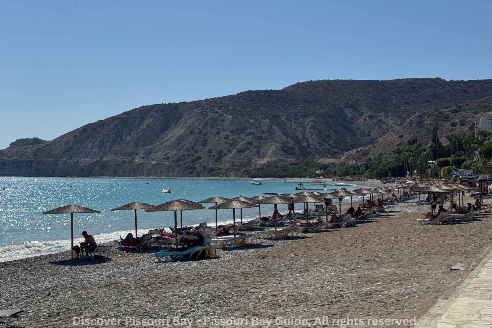
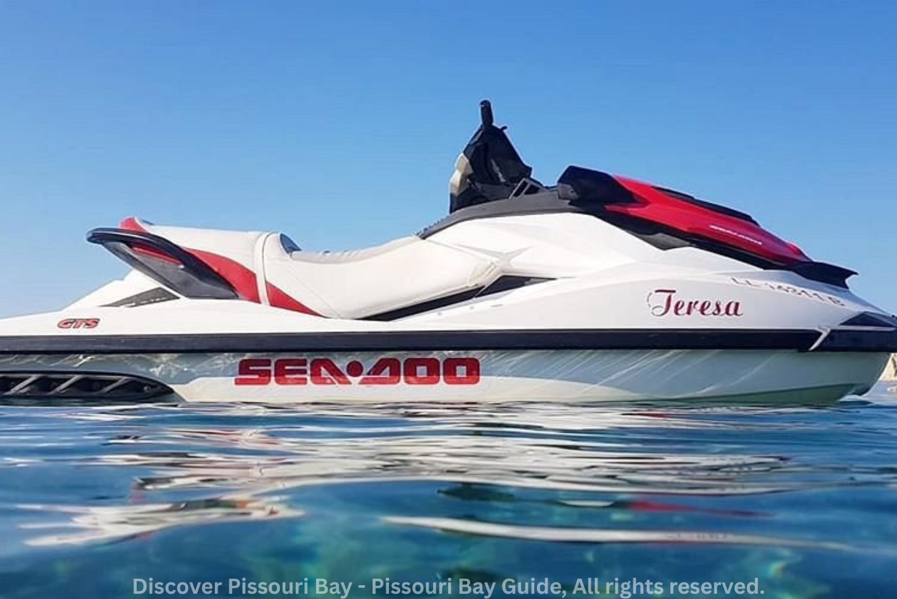
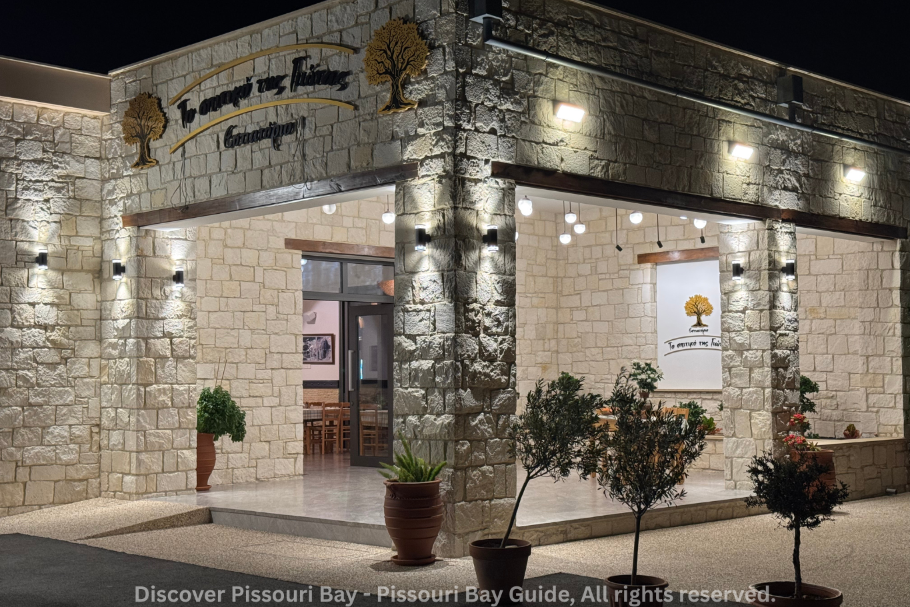
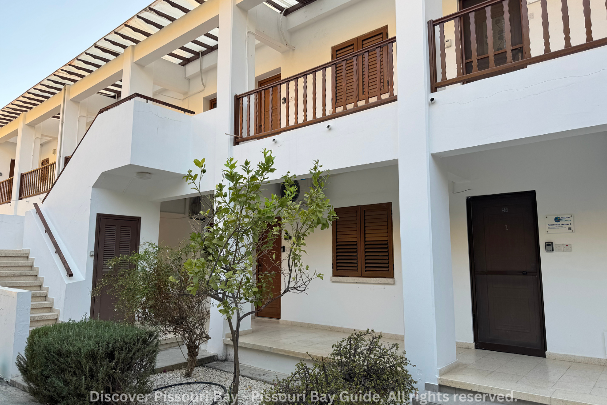
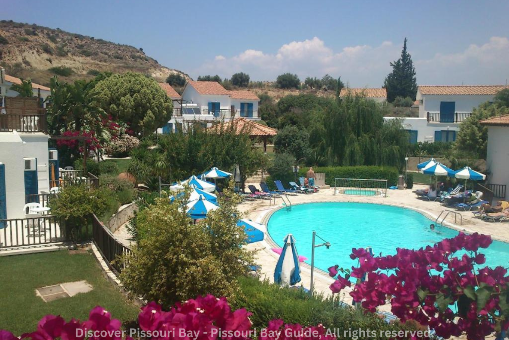
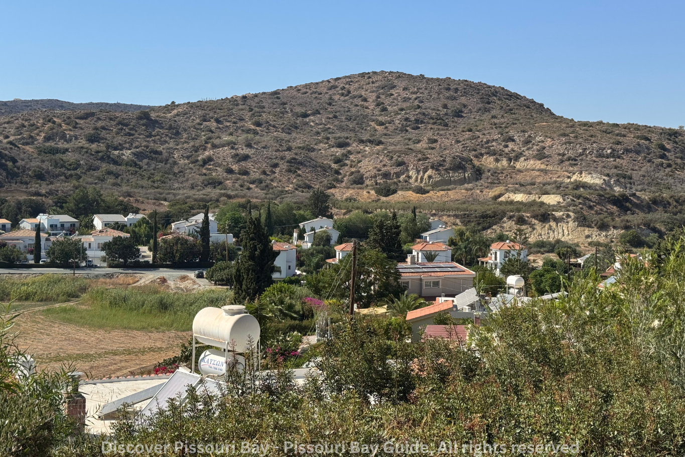
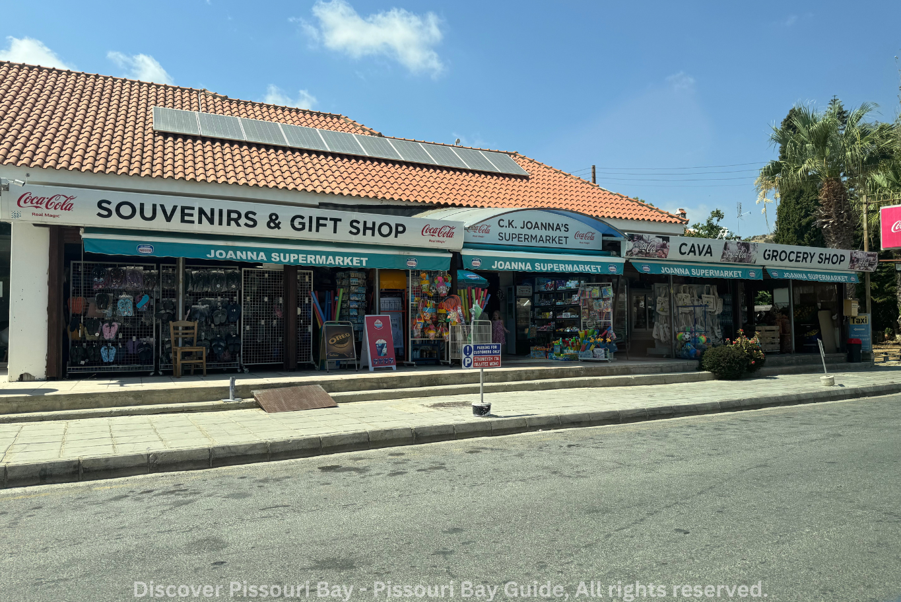

Welcome to Pissouri Bay
Pissouri Bay is a crescent-shaped coastal area on the southern coast of Cyprus, known for its clean waters, pebble-and-sandy beach and relaxed atmosphere. The bay sits below the charming Pissouri village and is framed by white cliffs in places, offering striking coastal vistas and photo opportunities.
This guide collects history, practical tips, food & stay recommendations and a long list of activities so you can plan a thorough visit.
Why Visit Pissouri Bay?
- Authentic Cypriot Experience: Less touristy than Ayia Napa or Protaras, offering genuine local culture
- Stunning Natural Beauty: Dramatic cliffs, crystal-clear waters, and unspoiled landscapes
- Perfect Location: Conveniently positioned between Limassol and Paphos
- Year-Round Destination: Mild winters and hot summers make it ideal any time of year
- Water Sports Paradise: Excellent conditions for diving, snorkeling, and various water activities
Beaches
Pissouri Beach (Blue Flag)
Pissouri Beach has been awarded the Blue Flag status, recognizing its excellent water quality, safety, and environmental management. The beach stretches for approximately 1 kilometer and features a mixture of pebbles and sand.
Beach Facilities:
- Sun loungers and umbrellas available for rent
- Changing rooms and shower facilities
- Lifeguard services during summer months
- Beachfront tavernas and cafes
Water Quality & Safety
The waters at Pissouri Bay are exceptionally clear and clean, making it perfect for swimming and snorkeling. The bay is generally sheltered, providing calm conditions ideal for families with children. However, be aware that the beach can have a steep drop-off in places, and occasional currents can develop.
Things to Do
Water Activities
Pissouri Bay offers an incredible range of water-based activities suitable for all skill levels:
- Scuba Diving: Several dive centers operate from the bay, offering PADI courses and guided dives to local sites including caves and the famous Amphitrite wreck
- Snorkeling: Excellent visibility and marine life around the rocky areas at both ends of the bay
- Kayaking: Rent kayaks to explore the coastline and hidden coves
- Stand-Up Paddleboarding: The calm waters make it perfect for SUP
- Jet Skiing: Available during peak season
- Boat Trips: Day cruises along the coast departing from the bay
Land Activities
- Hiking: Multiple trails connect the beach to Pissouri village, offering spectacular views. The Aphrodite Trail is particularly popular
- Cycling: Bike rentals available for exploring the surrounding countryside
- Wine Tours: Visit wineries in Pissouri and in the nearby Troodos areas
- Village Exploration: Wander through Pissouri village's narrow streets and traditional architecture
Nearby Attractions
Pissouri Bay serves as an excellent base for exploring the region:
- Kourion Archaeological Site (20 min drive) - Ancient Greco-Roman city with stunning amphitheater
- Petra tou Romiou (Aphrodite's Rock) - Legendary birthplace of Aphrodite (25 min drive)
- Troodos Mountains - Cool mountain villages and Byzantine churches (45 min drive)
- Limassol Old Town - Historic city center with castle and marina (35 min drive)
- Paphos Archaeological Park - UNESCO World Heritage site (40 min drive)
- Pissouri Village - Great local village with Pissouri amphitheater
Restaurants & Dining
Pissouri Bay boasts an excellent selection of restaurants, from traditional Cypriot tavernas to international cuisine. The beachfront offers several dining options with stunning sea views.
Beachfront Tavernas
The bay's tavernas specialize in fresh seafood and traditional meze. Expect to find:
- Freshly caught fish grilled to perfection
- Traditional Cypriot meze (15-20 small dishes)
- Grilled halloumi and fresh salads
- Souvlaki and kleftiko
- Local wines from nearby vineyards
Pissouri Village Restaurants
Head up to the village for more dining options and a cooler evening atmosphere. Many restaurants offer panoramic sunset views over the bay.
Restaurants To Try:
- Reservations recommended for most restaurants during peak season (July-August)
- The Bay Tree
- Ampeli Restaurant
- Το σπιτικό της Γιώτας Εστιατόριο
- Hill View Restaurant
- Melanda Beach Restaurant
- Wine Leaf Restaurants
- The Little Cafe On The Corner
Local Specialties to Try
- Meze: A feast of small dishes - the ultimate Cypriot dining experience
- Halloumi: Grilled Cypriot cheese, a must-try
- Souvla: Large chunks of meat slow-cooked on a spit
- Kleftiko: Slow-cooked lamb cooked in sealed ovens
- Fresh Calamari: Lightly fried and served with lemon
- Loukoumades: Honey-soaked donuts for dessert
Where to Stay
Pissouri offers a range of accommodation options to suit all budgets and preferences, from luxury resorts to cozy apartments.
Accommodation Types
Beachfront Hotels & Resorts
Several hotels are located directly on or near the bay, offering immediate beach access and sea views. These typically include pools, restaurants, and water sports facilities.
Village Apartments & Villas
Pissouri Village offers numerous self-catering apartments and traditional stone villas. These provide a more authentic experience and are perfect for longer stays or families.
Rental Properties
Many private villas and apartments are available for short or long-term rent, offering great value especially for groups or families.
Booking Tips
- Book well in advance for July and August (peak season)
- Shoulder seasons (May-June, September-October) offer better rates and fewer crowds
- Many properties require minimum stays during peak season
- Check if your accommodation includes air conditioning (essential in summer)
- Consider location: beach vs. village based on your preferences
- Car rental highly recommended for exploring the area
Popular accommodations:
- Columbia Beach Hotel
- Skeleas Pissouri Apartments
- Pelekanos Apartments
- Hylatio Tourist Village
- Heavens Edge
What to Expect
- Most accommodations feature traditional Cypriot architecture
- Outdoor terraces and BBQ areas standard in most villas
- Many properties offer stunning sea or mountain views
History of Pissouri
Ancient Origins
The name "Pissouri" is believed to derive from the Greek word "pissos" meaning pitch or tar, as the area was known for producing this substance in ancient times. The region has been inhabited for thousands of years, with archaeological evidence of settlements dating back to the Neolithic period.
Historical Sites Nearby
- Kourion: Magnificent Greco-Roman city ruins with spectacular amphitheater
- Sanctuary of Apollo Hylates: Ancient religious complex dedicated to Apollo
- Kolossi Castle: Medieval fortress built by the Knights of St. John
- Old Pissouri Village: Traditional architecture and narrow streets preserved in the upper village
Practical Information
Shops
Many shops are located in the Pissouri Bay area, mainly kiosks and Bay Jewellery. More shops like supermarkets and hardware shops are located near Pissouri Village.
Getting to Pissouri Bay
By Air
- Paphos Airport: 50km (approx. 40 minutes drive)
- Larnaca Airport: 85km (approx. 1 hour drive)
By Car
Pissouri is easily accessible via the A6 motorway connecting Limassol and Paphos. Car rental is highly recommended for exploring the area and is available at both airports and major towns.
Climate & Best Time to Visit
- Summer (June-September): Hot and dry, 28-35°C, perfect beach weather
- Spring (March-May): Mild temperatures 18-25°C, wildflowers blooming
- Autumn (October-November): Warm sea temperatures, fewer tourists
- Winter (December-February): Mild and quiet, 15-20°C, some rain
What to Pack
- High SPF sunscreen and sun hat (essential year-round)
- Comfortable walking shoes for hiking
- Snorkeling equipment (though rentals available)
- Light, breathable clothing for summer
- Light jacket for cooler evenings
- Water bottle for staying hydrated
- Camera for capturing stunning landscapes